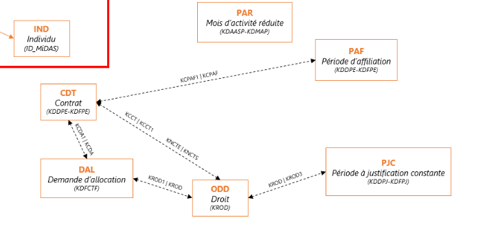
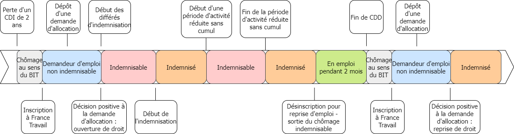
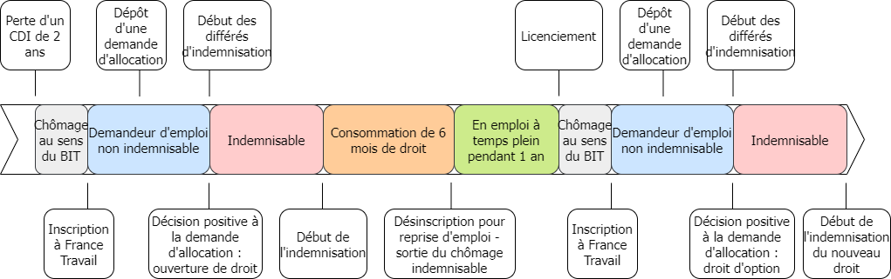

mois_debut <- as.Date("2021-01-01")
mois_fin <- as.Date("2021-01-31")
ouvertures_droit_mois <- PJC %>%
select(id_midas, KROD3, KDDPJ) %>%
mutate(KDDPJ = as.Date(KDDPJ)) %>%
group_by(id_midas, KROD3) %>%
summarise(date_ouv_droit = min(KDDPJ)) %>%
ungroup() %>%
filter(date_ouv_droit >= mois_debut & date_ouv_droit <= mois_fin) Le parcours de l’indemnisation
Inscription et indemnisation
Cette fiche présente les principaux concepts de l’indemnisation, la manière dont ils apparaissent dans les données de l’indemnisation de MiDAS : le Fichier National des Allocataires (FNA) transmis par France Travail, et la méthodologie pour reproduire les indicateurs statistiques usuels associés.
NoteProgrammation
Les programmes fournis sont des programmes R rédigés en syntaxe tidyverse. Les packages du tidyverse sont donc nécessaires, en particulier le package dplyr pour assurer le fonctionnement des programmes. 🔧
Néanmoins, cette condition n’est pas suffisante. Les données MiDAS exhaustives sont volumineuses et peuvent nécessiter des ressources informatiques importantes pour effectuer le calcul des indicateurs évoqués ici. 💻
Le parcours de l’indemnisation

Trois dénominations sont utilisées au cours de cet article :
un demandeur d’emploi est une personne inscrite à France Travail, déclarant être en recherche d’un emploi ;
un allocataire de l’Assurance-chômage, ou personne prise en charge par l’Assurance-chômage, ou demandeur d’emploi indemnisable est un demandeur d’emploi qui a une demande d’allocation acceptée par France Travail ;
un allocataire indemnisé est un allocataire qui perçoit une allocation.
Dépôt d’une demande d’allocation
Suite à la perte involontaire d’un contrat de travail, l’inscription à France Travail donne lieu à un accompagnement au retour à l’emploi. Une fois inscrit, le demandeur d’emploi peut déposer une demande d’allocation.
L’ensemble des demandes d’allocation sont renseignées dans le segment DAL du Fichier National des Allocataires (FNA) de MiDAS. La décision de France Travail à une demande d’allocation peut être :
positive avec ouverture d’un nouveau droit : si le demandeur d’emploi remplit la condition d’ouverture de droit, le motif de décision lié à la DAL est alors ouverture de droit (
KCNDDA = 1)positive avec reprise d’un droit déjà ouvert précédemment : un droit reste valable pendant toute la durée du délai de déchéance (voir section dédiée dans cet article)
positive avec rechargement des droit (voir section dédiée dans cet article)
négative ou sans objet
Si la décision liée à la demande d’allocation est positive, le demandeur d’emploi entre à l’Assurance chômage et devient allocataire de l’Assurance-chômage, ou encore indemnisable à l’Assurance chômage. Cette entrée à l’Assurance-chômage est appelée ouverture de droit ou reprise de droit pour les allocataires qui avaient déjà ouvert un droit qui n’a pas dépassé le délai de déchéance.
Tout allocataire de l’Assurance-chômage est donc nécessairement inscrit à France Travail.
CautionIndemnisables non inscrits
Les données administratives peuvent présenter quelques erreurs. Une partie relativement négligeable des allocataires de l’Assurance-chômage n’ont pas d’inscription en cours dans les données de l’inscription (Fichier Historique Statistique, FHS). Ces données sont dites aberrantes car aucun allocataire ne peut percevoir d’allocation chômage sans avoir une inscription en cours à France Travail, un défaut d’actualisation entraînant directement l’arrêt du versement.
Une désinscription de France Travail entraîne donc une sortie de l’Assurance-chômage.
Ouverture de droit 🟢
Un droit à l’Assurance-chômage est identifié dans le FNA par le couple id_midas, KROD3 (PJC) ou KROD1 (ODD, DAL).
La table ODD du FNA ne contient pas les dates d’ouverture de droit.
Elle contient la date du premier versement d’allocation sur le droit (KDPOD) qui ne correspond pas à la date d’ouverture de droit (ou entrée à l’Assurance-chômage). Les allocataires commencent presque systématiquement par une période indemnisable (couverte par l’Assurance-chômage) non indemnisée : la période de différé d’indemnisation (voir la fiche dédiée - à venir). Certains allocataires peuvent retrouver un emploi et se désinscrire pendant cette période de différé d’indemnisation et ne jamais être indemnisé sur leur droit. Dans ce cas, la date de premier jour indemnisé n’est pas renseignée.
La date d’ouverture de droit doit être recalculée à partir de la table PJC du FNA. La premiere PJC sur le droit (couple id_midas, KROD3), celle dont la date de début KDDPJ est minimale pour ce couple identifiant, correspond à l’ouverture de droit. Cette première PJC est la grande majorité du temps non payée, non consommée (KCPJC = 3), avec une allocation journalière KQBPJP nulle car elle correspond à une période indemnisable non indemnisée de différé d’indemnisation.
Pour calculer la date d’ouverture de droit et comptabiliser l’ensemble des ouvertures de droit un mois donné :
Fait générateur
Le fait générateur de l’ouverture de droit est la fin du contrat donnant droit à une prise en charge par l’Assurance-chômage. Ce contrat ouvrant le droit est disponible dans la table CDT du FNA.

Le fait générateur est un concept crucial car c’est cette date qui détermine généralement la réglementation dont l’allocataire dépend : lorsqu’une réforme de l’indemnisation est mise en place, un droit est concerné si le fait générateur, c’est-à-dire la date de fin du contrat ouvrant le droit, a lieu après la date indiquée pour l’entrée en vigueur de la nouvelle règle.
Pour associer une ouverture de droit à son fait générateur, il existe deux méthodes possibles :
appariement direct entre la table ODD et la table CDT en utilisant le couple clef d’appariement
id_midas,KCCT(CDT) et son équivalentKCCT1(ODD)appariement en deux temps par la table DAL :
associer un droit d’ODD avec la demande d’allocation de DAL correspondante via le couple clef d’appariement
id_midas,KROD1en conservant uniquement les demandes d’allocation donnant lieu à une ouverture de droit (KCNDDA = 1) ou à une reprise de droit (KCNDDA = 3)associer une demande d’allocation acceptée au fait générateur à l’aide du couple
id_midas,KCDA(DAL) et son homologueKCDA1(CDT).
La méthode recommandée est l’appariement en deux temps par la table DAL, pour les raisons suivantes :
une partie des contrats de travail faits générateurs est manquante dans les données adminsitratives
quelques faits générateurs supplémentaires ne peuvent pas être associés à un droit par la méthode d’appariement direct entre ODD et CDT : pour certains droits, la variable nécessaire à l’appariement
KCCT1est non renseignée dans la table ODDla méthode d’appariement via DAL est la méthode qui permet de récupérer le maximum de faits générateurs.
WarningEntrée dans le FNA par PJC ou ODD 💡
Il est conseillé de partir des tables PJC ou ODD pour repérer des allocataires indemnisables ou indemnisés d’un champ, plutôt que de commencer le repérage par la table CDT du fait générateur.
Partir de la table CDT peut paraître naturel puisque la date de fin de contrat fait générateur conditionne la soumisison à une réglementation d’Assurance-chômage, mais le fait que certains faits générateurs soit manquants peut conduire à sous estimer le nombre de personnes du champ visé.
Un proxi de la date du fait générateur peut être la date d’ouverture de droit. Ce proxi n’est pas parfait : le demandeur d’emploi dispose d’un an pour s’inscrire à France Travail à l’issue de sa fin de contrat. En réalité, l’inscription a souvent lieu peu après la fin de contrat, et la demande d’allocation est déposée très rapidement également.
droits_faits_generateurs <- ODD %>%
distinct(id_midas, KROD1) %>%
left_join(DAL, by = c("id_midas", "KROD1")) %>%
filter(KNCDDA == 1 | KCNDDA == 3) %>%
distinct(id_midas, KROD1, KCDA) %>%
rename(KCDA1 = KCDA) %>%
left_join(CDT, by = c("id_midas", "KCDA1")) %>%
distinct(id_midas, KROD1, KDFPE)Durée potentielle d’indemnisation 🟢
Un droit se caractérise par une durée potentielle d’indemnisation. La durée potentielle d’indemnisation dépend de la réglementation dont dépend le droit.
La variable KPJDXPde la table ODD renseigne la durée potentielle d’indemnisation, mais elle présente des valeurs aberrantes. Elle doit être redressée avant d’être utilisée.
La durée potentielle d’indemnisation dépend de l’âge de l’allocataire au moment de la fin de contrat fait générateur de l’ouverture de droit. La durée potentielle d’indemnisation donnée par KPJDXP dépasse parfois la borne maximale légale pour la classe d’âge de l’allocataire. Il faut donc borner cette durée maximale par la durée légale connue.
L’âge à la fin du contrat de travail peut être calculé à l’aide de la date de naissance disponible dans la table DE du FHS. Pour les faits générateurs manquants, il est possible de lui substituer l’âge à l’ouverture de droit.
Par exemple, en distinguant les droits ouverts avant le 1er février 2023 (date d’entrée en vigueur de la contracyclicité) et les droits ouverts ensuite :
droit_datnais <- DE %>%
distinct(id_midas, datnais) %>%
right_join(ODD, by = c("id_midas")) %>%
distinct(id_midas, KROD1, datnais)
date_ouvertures_droit <- PJC %>%
select(id_midas, KROD3, KDDPJ) %>%
mutate(KDDPJ = as.Date(KDDPJ)) %>%
group_by(id_midas, KROD3) %>%
summarise(date_ouv_droit = min(KDDPJ)) %>%
ungroup() %>%
rename(KROD1 = KROD3) %>%
right_join(droit_datnais, by = c("id_midas", "KROD1"))
fait_generateur <- DAL %>%
right_join(date_ouvertures_droit, by = c("id_midas", "KROD1")) %>%
filter(KNCDDA == 1 | KCNDDA == 3) %>%
distinct(id_midas, KROD1, KCDA, datnais) %>%
rename(KCDA1 = KCDA) %>%
left_join(CDT, by = c("id_midas", "KCDA1")) %>%
distinct(id_midas, KROD1, KDFPE, datnais) %>%
mutate(KDFPE = as.Date(KDFPE),
datnais = as.Date(datnais),
age_fin_ctt = case_when(!(is.na(KDFPE)) ~ KDFPE - datnais,
(is.na(KDFPE)) ~ date_ouv_droit - datnais))
duree_max_redressee <- ODD %>%
right_join(fait_generateur, by = c("id_midas", "KROD1")) %>%
mutate(duree_max = case_when(age_fin_ctt < 53 & (KDFPE < as.Date("2023-02-01") | (is.na(KDFPE) & date_ouv_droit < as.Date("2023-02-01"))) ~ ifelse(KPJDXP > 730, 730, KPJDXP),
age_fin_ctt >= 53 & age_fin_ctt < 55 & (KDFPE < as.Date("2023-02-01") | (is.na(KDFPE) & date_ouv_droit < as.Date("2023-02-01")))~ ifelse(KPJDXP > 913, 913, KPJDXP),
age_fin_ctt >= 55 & (KDFPE < as.Date("2023-02-01") | (is.na(KDFPE) & date_ouv_droit < as.Date("2023-02-01"))) ~ ifelse(KPJDXP > 1095, 1095, KPJDXP),
age_fin_ctt < 53 & (KDFPE >= as.Date("2023-02-01") | (is.na(KDFPE) & date_ouv_droit >= as.Date("2023-02-01"))) ~ ifelse(KPJDXP > 548, 548, KPJDXP),
age_fin_ctt >= 53 & age_fin_ctt < 55 & (KDFPE >= as.Date("2023-02-01") | (is.na(KDFPE) & date_ouv_droit >= as.Date("2023-02-01")))~ ifelse(KPJDXP > 685, 685, KPJDXP),
age_fin_ctt >= 55 & (KDFPE <= as.Date("2023-02-01") | (is.na(KDFPE) & date_ouv_droit <= as.Date("2023-02-01"))) ~ ifelse(KPJDXP > 822, 822, KPJDXP)))Ensemble des indemnisables 🔵
Une personne indemnisable dispose d’une PJC en cours dans la table PJC du FNA, qu’elle soit payée et consommée (KCPJC = 1), non payée et consommée (KCPJC = 2), ou non payée et non consommée (KCPJC = 3).
En fin de mois 🔵
mois_fin <- as.Date("2021-01-31")
indemnisable_fm <- PJC %>%
select(id_midas, KCPJC, KDDPJ, KDFPJ) %>%
filter(KDDPJ <= mois_fin & KDFPJ >= mois_fin) %>%
distinct(id_midas)Tout le mois
mois_debut <- as.Date("2021-01-01")
mois_fin <- as.Date("2021-01-31")
mois_duree = mois_fin - mois_debut + 1
indemnisable_tm <- PJC %>%
select(id_midas, KCPJC, KDDPJ, KDFPJ) %>%
mutate(KDDPJ_trunc = if_else(KDDPJ < mois_debut, mois_debut, KDDPJ),
KDFPJ_truc = if_else(KDFPJ > mois_fin, mois_fin, KDFPJ)) %>%
filter(KDDPJ <= mois_fin & KDFPJ >= mois_debut) %>%
mutate(duree_PJC_trunc = KDFPJ_trunc - KDDPJ_trunc) %>%
group_by(id_midas) %>%
summarise(duree_indemnisable = sum(duree_PJC_trunc)) %>%
ungroup() %>%
filter(duree_indemnisable == mois_duree) %>%
distinct(id_midas)Au cours du mois
mois_debut <- as.Date("2021-01-01")
mois_fin <- as.Date("2021-01-31")
indemnisable_cm <- PJC %>%
select(id_midas, KCPJC, KDDPJ, KDFPJ) %>%
filter(KDDPJ <= mois_fin & KDFPJ >= mois_debut) %>%
distinct(id_midas)Cas de l’activité réduite
Un allocataire peut cumuler une partie de ses allocations avec le revenu d’une activité réduite, dans la limite de son SJR mensualisé. Ainsi, une partie seulement de son allocation mensuelle lui est versée, et la partie non versée et non consommée du fait de l’activité réduite est reportée.
Dans les données de l’indemnisation (PJC du FNA), cette réglementation est renseignée de la façon suivante :
le montant d’allocation versé est reseigné sous forme de jours consommés et payés d’allocation. L’indemnisation est fondée sur le concept d’un montant journalier d’allocation versé pendant un nombre de jours d’au maximum la durée potentielle d’indemnisation. Lorsqu’une partie seulement de l’allocation est versée sur le mois, ce montant mensuel est traduit en nombre de jours indemnisés au montant d’allocation journalière sur le mois. Ces jours payés consommés forment une PJC unique payée consommée (
KCPJC = 1) en début de mois.le montant non versé du fait de l’activité réduite correspond au nombre de jours non indemnisés au montant d’allocation journalière du reste du mois. Pour ces jours restants sur le mois, une unique PJC non payée non consommée (
KCPJC = 3) sur la deuxième partie du mois, qui commence le jour suivant la fin de la PJC payée consommée. L’allocataire est alors dit indemnisable.
NoteExemple
Un allocataire dispose d’un SJR de 70€. Son allocation journalière correspond à 57% de son SJR, soit 39,9€. Il débute une activité au début du mois m avec un salaire de 230€. Pour un euro d’activité réduite gagné, il perd uniquement 70 centimes d’allocation. Son allocation mensuelle de 1197€ diminue donc de 161€ (0,7 x 230€). Ces 161€ représentent 4 jours indemnisés au montant d’allocation journalière de 39,9€. Dans les données, au mois m, cet allocataire aura :
une PJC payée, consommée du 1er au 26ème jour du mois m ;
une PJC non payée non consommée du 27ème jour au 30ème jour du mois m.
Ces 4 jours non payés non consommés sont reportés et pourront être consommés plus tard.
Son revenu total augmente donc au mois m : 1266€ au lieu de 1197€.
Ces allocataires comptent parmi les indemnisables en fin de mois, mais parmi les indemnisés au cours du mois.
Ensemble des indemnisés 🔵
En fin de mois 🔵
mois_fin <- as.Date("2021-01-31")
indemnisable_fm <- PJC %>%
select(id_midas, KCPJC, KDDPJ, KDFPJ) %>%
filter(KDDPJ <= mois_fin & KDFPJ >= mois_fin & KCPJC == 1) %>%
distinct(id_midas)Tout le mois
mois_debut <- as.Date("2021-01-01")
mois_fin <- as.Date("2021-01-31")
indemnisable_tm <- PJC %>%
select(id_midas, KCPJC, KDDPJ, KDFPJ) %>%
filter(KDDPJ <= mois_fin & KDFPJ >= mois_debut) %>%
mutate(PJC_payee = if_else(KCPJC == 1, 1, 0)) %>%
group_by(id_midas) %>%
summarise(nb_PJC = n(),
nb_PJC_payee = sum(PJC_payee)) %>%
ungroup() %>%
filter(nb_PJC == nb_PJC_payee) %>%
distinct(id_midas)Au cours du mois
mois_debut <- as.Date("2021-01-01")
mois_fin <- as.Date("2021-01-31")
indemnisable_cm <- PJC %>%
select(id_midas, KCPJC, KDDPJ, KDFPJ) %>%
filter(KDDPJ <= mois_fin & KDFPJ >= mois_debut & KCPJC == 1) %>%
distinct(id_midas)Distinction par régime 🔵
La fiche dédiée sur les allocations et régimes d’indemnisation associe chaque code allocation détaillé des variables KCAAJ de la table ODD et KCALFde la table PJC à l’allocaiton agrégée et au régime d’indemnisation correspondant. Un exemple de programme R correspondant est disponible ci-dessous.
SUITE A VENIR
Régimes particuliers
Les régimes particuliers dépendant d’annexes à la convention d’Assurance-chômage sont donnés par la variable KCRD de la table ODD. Les exclusions de champ classiques concernent souvent le régime des intermittents du spectacle, qui correspondent aux annexes VII et X (KCRD = 28 et KCRD = 29).
Consommation de droit 🟢
Pour calculer le nombre de jours consommés dans le droit, il faut sommer les périodes consommées de ce droit dans la table PJC.
Les périodes consommées sont :
les périodes “consommées et payées” (
KCPJC = 1)les périodes consommées non payées (
KCPJC = 2)les périodes consommées et payées au titre des aides (
KCPJC = 4) : elles sont inexistantes sur période récente.
Par exemple, voici le programme pour calculer la consommation de droit d’un ensemble d’allocataires ouvrant un droit au cours de ce mois.
mois_debut <- as.Date("2021-01-01")
mois_fin <- as.Date("2021-01-31")
ouvertures_droit_mois <- PJC %>%
select(id_midas, KROD3, KDDPJ) %>%
mutate(KDDPJ = as.Date(KDDPJ)) %>%
group_by(id_midas, KROD3) %>%
summarise(date_ouv_droit = min(KDDPJ)) %>%
ungroup() %>%
filter(date_ouv_droit >= mois_debut & date_ouv_droit <= mois_fin)
conso_droit <- PJC %>%
filter(KCPJC == 1 | KCPJC == 2 | KCPJC == 4) %>%
mutate(KDDPJ = as.Date(KDDPJ),
KDFPJ = as.Date(KDFPJ),
duree_PJC = KDFPJ - KDDPJ + 1)
right_join(ouvertures_droit_mois, by = c("id_midas", "KROD3")) %>%
group_by(id_midas, KROD3) %>%
summarise(conso_droit_obs = sum(duree_PJC, na.rm = TRUE)) %>%
ungroup() %>%
mutate(conso_droit = ifelse(is.na(conso_droit_obs, 0, conso_droit_obs)))
CautionDroit ouvert non consommé
Un droit peut avoir été ouvert sans qu’aucun jour n’ait jamais été consommé. C’est le cas des allocataires qui se désinscrivent pendant leur période de différé d’indemnisation.
Reprises de droit 🟢
Un droit ouvert à l’Assurance-chômage peut être repris suite à une désinscription.
Comme représenté sur le schéma ci-dessous, un allocataire peut retrouver un contrat et se désinscrire de France Travail, ce qui met fin à son indemnisation automatiquement. Cet allocataire peut par exemple parvenir à la fin d’un CDD de 2 mois et s’inscrire à nouveau à France Travail pour la perte involontaire de ce contrat de travail. Une nouvelle demande d’allocation est déposée et peut donner lieu à la reprise du droit précédemment ouvert à la suite de la perte du premier contrat, un CDI de 2 ans.
Cette reprise est possible à deux conditions :
si le droit précédemment ouvert n’a pas encore été entièrement consommé
si le droit n’a pas atteint son délai de déchéance : trois ans allongé de la durée potentielle d’indemnisation initiale. Il existe des cas particuliers permettant d’allonger ce délai.
Illustration d’un cas-type de reprise de droit

Dans les données, le repérage des reprises de droit se fait comme suit : lorsque deux PJC sur le même droit (même couple identifiant id_midas, KROD3) sont espacées d’au moins un jour, la nouvelle PJC correspond à une reprise de droit.
mois_debut <- as.Date("2021-01-01")
mois_fin <- as.Date("2021-01-31")
reprise_droit <- PJC %>%
group_by(id_midas, KROD3) %>%
arrange(id_midas, KROD3, KDDPJ) %>%
mutate(ecart = KDDPJ - lag(KDFPJ)) %>%
ungroup() %>%
filter(ecart > 0 & KDDPJ >= mois_debut & KDDPJ <= mois_fin) Droit d’option
Dans le cas où une personne aurait assez travaillé suite à sa désincription pour ouvrir un nouveau droit, tandis que son ancien droit n’est pas déchu, par exemple dans la situation représentée ci-dessous :
Illustration d’un cas-typ de droit d’option

Il existe une possibilité d’opter sous conditions pour le droit nouvellement ouvert du fait de cette nouvelle période travaillée. Les conditions sont détaillées dans cet article de l’UNEDIC.
Le nouveau droit ouvert avec droit d’option corrrespond alors à un nouveau couple identifiant id_midas, KROD3 . L’ouverture d’un nouveau droit lié à un droit d’option correspond à une demande d’allocation dans DAL dont le motif de décision est Ouverture de droit suite à “Exercice du Droit d’Option” (AC 2014) (KCNDDA = 12 ) ou Ouverture de droit suite à “Exercice du Droit d’Option” autre qu’apprentis (Avenants AC 2014) (KCNDDA = 13 ).
Fins de droit 🟢
Une fin de droit a lieu lorsque l’allocataire consomme une durée égale à la durée potentielle d’indemnisation de son droit.
Pour repérer une fin de droit, il suffit de vérifier que la durée consommé du droit à la date de fin de PJC est égale à la durée potentielle d’indemnisation redressée.
mois_debut <- as.Date("2021-01-01")
mois_fin <- as.Date("2021-01-31")
# Calcul de la duree maximale redressee
droit_datnais <- DE %>%
distinct(id_midas, datnais) %>%
right_join(ODD, by = c("id_midas")) %>%
distinct(id_midas, KROD1, datnais)
date_ouvertures_droit <- PJC %>%
select(id_midas, KROD3, KDDPJ) %>%
mutate(KDDPJ = as.Date(KDDPJ)) %>%
group_by(id_midas, KROD3) %>%
summarise(date_ouv_droit = min(KDDPJ)) %>%
ungroup() %>%
rename(KROD1 = KROD3) %>%
right_join(droit_datnais, by = c("id_midas", "KROD1"))
fait_generateur <- DAL %>%
right_join(date_ouvertures_droit, by = c("id_midas", "KROD1")) %>%
filter(KNCDDA == 1 | KCNDDA == 3) %>%
distinct(id_midas, KROD1, KCDA, datnais) %>%
rename(KCDA1 = KCDA) %>%
left_join(CDT, by = c("id_midas", "KCDA1")) %>%
distinct(id_midas, KROD1, KDFPE, datnais) %>%
mutate(KDFPE = as.Date(KDFPE),
datnais = as.Date(datnais),
age_fin_ctt = case_when(!(is.na(KDFPE)) ~ KDFPE - datnais,
(is.na(KDFPE)) ~ date_ouv_droit - datnais))
duree_max_redressee <- ODD %>%
right_join(fait_generateur, by = c("id_midas", "KROD1")) %>%
mutate(duree_max = case_when(age_fin_ctt < 53 & (KDFPE < as.Date("2023-02-01") | (is.na(KDFPE) & date_ouv_droit < as.Date("2023-02-01"))) ~ ifelse(KPJDXP > 730, 730, KPJDXP),
age_fin_ctt >= 53 & age_fin_ctt < 55 & (KDFPE < as.Date("2023-02-01") | (is.na(KDFPE) & date_ouv_droit < as.Date("2023-02-01")))~ ifelse(KPJDXP > 913, 913, KPJDXP),
age_fin_ctt >= 55 & (KDFPE < as.Date("2023-02-01") | (is.na(KDFPE) & date_ouv_droit < as.Date("2023-02-01"))) ~ ifelse(KPJDXP > 1095, 1095, KPJDXP),
age_fin_ctt < 53 & (KDFPE >= as.Date("2023-02-01") | (is.na(KDFPE) & date_ouv_droit >= as.Date("2023-02-01"))) ~ ifelse(KPJDXP > 548, 548, KPJDXP),
age_fin_ctt >= 53 & age_fin_ctt < 55 & (KDFPE >= as.Date("2023-02-01") | (is.na(KDFPE) & date_ouv_droit >= as.Date("2023-02-01")))~ ifelse(KPJDXP > 685, 685, KPJDXP),
age_fin_ctt >= 55 & (KDFPE <= as.Date("2023-02-01") | (is.na(KDFPE) & date_ouv_droit <= as.Date("2023-02-01"))) ~ ifelse(KPJDXP > 822, 822, KPJDXP)))
# Repérage des fins de PJC un mois donné
fin_pjc <- PJC %>%
mutate(KDFPJ = as.Date(KDFPJ)) %>%
filter(KDFPJ <= mois_fin & KDFPJ >= mois_deb) %>%
group_by(id_midas, KROD3) %>%
filter(KDFPJ_borne == max(KDFPJ)) %>%
ungroup()
# Calcul des consommations de droit à la fin de PJC repérer
conso_droit <- PJC %>%
filter(KCPJC == 1 | KCPJC == 2 | KCPJC == 4) %>%
mutate(KDDPJ = as.Date(KDDPJ),
KDFPJ = as.Date(KDFPJ),
duree_PJC = KDFPJ - KDDPJ + 1)
right_join(fin_pjc, by = c("id_midas", "KROD3")) %>%
filter(KDFPJ <= KDFPJ_borne)
group_by(id_midas, KROD3) %>%
summarise(conso_droit_obs = sum(duree_PJC, na.rm = TRUE)) %>%
ungroup() %>%
mutate(conso_droit = ifelse(is.na(conso_droit_obs, 0, conso_droit_obs)))
# Comparaison à la durée potentielle d'indemnisation
fin_droit <- conso_droit %>%
left_join(duree_max_redressee, by = c("id_midas", "KROD3")) %>%
filter(conso_droit == duree_max) %>%
distinct(id_midas, KROD3)Suivies d’un rechargement 🟢
Le repérage des rechargements suite à une fin de droit est permis par la table DAL. Au sujet des rechargements, voir l’article de l’UNEDIC à ce lien.
Un rechargement correspond à un nouveau couple identifiant id_midas, KROD3 . Si la fin de droit est suivie de l’ouverture d’un nouveau droit associé à une demande d’allocation de type rechargement (KCDAL = 26) dont la décision est “ouverture de droit suite à rechargement (AC 2014)” (KCNDDA = 10).
date_fin_droit <- PJC %>%
select(id_midas, KROD3, KDFPJ) %>%
mutate(KDDPJ = as.Date(KDDPJ)) %>%
group_by(id_midas, KROD3) %>%
filter(KDFPJ == max(KDFPJ)) %>%
ungroup() %>%
rename(date_fin_droit = KDFPJ) %>%
right_join(fin_droit, by = c("id_midas", "KROD3"))
nouveau_droit <- PJC %>%
select(id_midas, KROD3, KDDPJ) %>%
mutate(KDDPJ = as.Date(KDDPJ)) %>%
group_by(id_midas, KROD3) %>%
summarise(date_ouv_droit = min(KDDPJ)) %>%
ungroup() %>%
rename(KROD3_rechargement = KROD3) %>%
right_join(date_fin_droit, by = c("id_midas")) %>%
filter(date_ouv_droit >= date_fin_droit) %>%
mutate(ecart = date_fin_droit - date_ouv_droit) %>%
filter(ecart <= 30)
rechargement <- DAL %>%
select(id_midas, KROD1, KCDAL, KCNDDA) %>%
rename(KROD3_rechargement = KROD1) %>%
right_join(nouveau_droit, by = c("id_midas", "KROD3_rechargement")) %>%
filter(KCDAL == 26 & KCNDDA == 10) %>%
distinct(id_midas, KROD1)Glossaire de l’indemnisation
Ce glossaire est tiré du bilan indemnisation 2022 publié par la Dares.
Entree à l’Assurance-chômage : une entrée à l’Assurance-chômage a lieu lorsqu’un demandeur d’emploi devient indemnisable, à la suite d’une perte d’emploi (ouverture de droit), ou d’une interruption (pour maladie par exemple) ou d’une ouverture de nouveaux droits.
Durée maximale d’indemnisation : la durée maximale d’indemnisation, ou durée du droit, correspond au nombre de jours d’indemnisation auquel donnent droit les périodes d’affiliation qui ont été liquidées.
Indemnisable à l’Assurance-chômage : une personne est dite “indemnisable” ou “couverte par une allocation” ou “a des droits ouverts à cette allocation”, si elle a déposé une demande d’allocation qui a été acceptée.
Indemnisable en fin de mois : indemnisable le dernier jour de ce mois.
Indemnisabilité continue : une personne est continûment indemnisable un mois donné lorsque qu’elle est indemnisable tous les jours de ce mois, même si elle a changé d’allocation au cours du mois.
Indemnisé : une personne est indemnisée par une allocation un mois donné si elle perçoit effectivement une allocation ce mois-ci. Dans certaines situations (activité réduite, différé ou délai d’attente, sanction), une personne peut être indemnisable un mois donné mais non indemnisée.
Période à Justification Constante (PJC) : c’est une période pendant laquelle le montant versé est constant. Elle est donc définie par une date de début, une date de fin et un montant fixe d’allocation journalière versée. Une période à justification constante peut correspondre à un montant d’allocation journalière de 0 : l’allocataire est dit indemnisable non indemnisé. Il est pris en charge par l’Assurance-chômage mais aucune allocation ne lui est versée pour plusieurs motifs : atteinte du plafond de cumul d’activité réduite, prise en charge temporaire par la Sécurité Sociale, période de différé d’indemnisation…
Durée consommée de droit : la durée consommée sur le droit est définie comme le cumul des jours déjà indemnisés au titre de ce droit à une date donnée. Elle ne peut être supérieure à la durée maximale d’indemnisation.
Sortie de l’Assurance-chômage : une sortie de l’Assurance-chômage correspond à une interruption d’un droit d’au moins un jour ou à une fin de droits. Lorsqu’une personne cesse de percevoir une allocation, mais que le droit reste ouvert (pratique d’une activité réduite par exemple), elle ne sort pas de l’Assurance-chômage.
Cibles
Pour vérifier la méthodologie utilisée en programmation pour reproduire des indicateurs statistiques usuels à partir des données de l’indemnisation, il est possible d’utiliser les sources suivantes :
le bilan annuel sur l’indemnisation des demandeurs d’emploi publié par la Dares : l’indemnisation des demandeurs d’emploi en 2022. Il contient les indicateurs présentés ici repérés par un 🔵
le tableau de suivi de l’Assurance chômage mis à jour mensuellement par l’UNEDIC : indicateurs de suivi de l’Assurance-chômage par département. Il contient les indicateurs présentés ici repérés par un 🟢